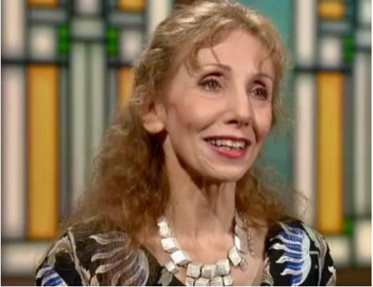
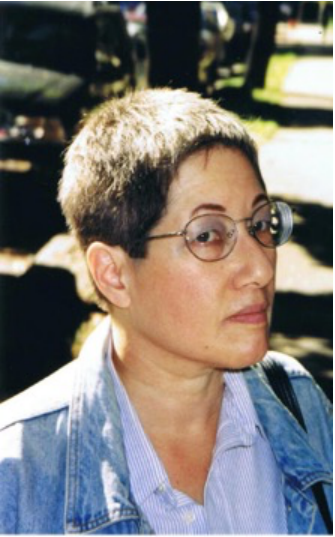

By Elizabeth Richter
My idea of perfect happiness is a healthy family, peace between nations, and all the critics die.
-David Mamet, playwright
Analysis of theater goes back millennia to Aristotle and Plato, and no doubt earlier. Today, theater lovers continue to seek advice from critics on what to see while at the same time, theater professionals may dread the posting of a review. Why and how does one become a theater critic? The pathways are as varied as their opinions.
One of Chicago’s only full-time theater critics, the Chicago Tribune’s Chris Jones doubles as the editorial page editor. Born in Bury, England, he came to the U.S. in 1984 to get his MA in theater at Ohio State University, earning his doctorate in 1989. Following teaching positions at Northern Illinois University and DePaul University, he joined the Tribune full time in 2002. His critic’s credentials, however, go back to his days at Ohio State when he wrote reviews for WCBE-FM in Columbus, Variety, and Daily Variety and was the film critic for the alternative weekly Columbus Alive. Critiquing entertainment media is in his DNA.
Chris Jones
Jones’ review of Cullud Wattah uses its historic context to introduce audiences to the environment of the play:
Fluids drip everywhere in Cullud Wattah, the potent new drama by Erika Dickerson-Despenza about the contamination crisis of Flint, Michigan, now at the Victory Gardens Theater. And not just liquid flowing from a faucet into a soothing bathtub or a kitchen sink where people wash their food. Human bodies, after all, are more than 50% made up of water. And thus on the stage at Victory Gardens, we also see the water that accompanies pregnancy, the water of urination, indeed, the crucial water that flows through most all of the canals of life.
-Chris Jones, Chicago Tribune, June 20, 2022
Just as Jones focused on theater at an early age, Milwaukee-based Mike Fischer was too, but he got his first critic’s position by accident. Mike had written reviews in high school and acted in college, but chose law as his profession, went on to Harvard Law School and became a partner at Quarles and Brady in Milwaukee. Fischer had a friend who reviewed theater for the Milwaukee Journal Sentinel. Assigned to review Twelve Angry Men (about a jury trial), his friend had a conflict and asked Fischer to do the review. “They liked my work…I started regularly [freelancing] in 2003. In 2009 when the regular critic retired, I became regular columnist,” Fischer recalled. But this did not replace his law career, “I was a partner in the firm, so I had a lot of control…it was a load, but I made it work.” Fischer would go on write over a thousand reviews before he retired.
Mike Fischer
Fischer plays on the title of Doubt to signal his own clear engagement with the principal issue expressed in the drama:
What do you do when you’re not sure? That’s the topic of my review today, even though I’m sure that the Milwaukee Chamber theatre’s riveting production of Doubt – directed by C. Michael Wright and featuring a top-notch cast in service of John Patrick Shanley’s Pulitzer-winning play – is a winner.
-Mike Fischer, Milwaukee Journal Sentinel 2018
WTTW theater critic Hedy Weiss grew up in New York City in a theater-loving family. Dance was her passion. “Mother, a great letter writer, knew a woman who started Sadlers Wells ballet. She recommended the best dance school in New York taught by Nanette Valois. I took the subway to classes at the Old Metropolitan Opera House, [Lincoln Center would replace it],” she said. She continued to take ballet lessons as an adult.
Moving to Chicago, she had no plans to become a critic. “It was never something I thought of doing in my life. It just happened. I was in the right place at the right time,” she said. She taught movement to actors at De Paul University, but realized she needed more income. Always addicted to theater, she wrote to the book editor at the Chicago Sun-Times. “I wrote freelance for the Sun-Times at an opportune moment. Long time reviewer Glenna Syse retired, and I lucked into her job,” she said. Weiss would remain at the Sun-Times for 33 years.

Hedy Weiss
Chicago theater icon Mike Nussbaum gets a nod from Weiss who cleverly defines the quality of his work:
Actor Mike Nussbaum will turn 95 in December (no, that’s not a typo), and he is now delivering such a towering performance in the Northlight Theatre production of Rachel Bon’s play Curve of Departure, that you might easily be persuaded he is simply a supremely talented actor impersonating an old man.
-Hedy Weiss, Chicago Sun Times 2019
Critics who write for one publication, staff or freelance, are rare today. Most newspapers use only freelance critics if they cover theater at all. Social media allows anyone to post or share an opinion. Weiss observed that if critics are employed, “they are not earning the salaries they used to get…. a few other cities like New York have stable critics, but not the way it used to be. It’s a cost cutting measure. You’ll see tons of sports writers. It’s a matter of priorities.”
Mary Shen Barnidge is a freelancer for Windy City Times. Like many others, she has written for a wide variety of publications. She had been the head staff writer for Moulinet: An Action Quarterly, about stage combat. Other freelance work was for New City, Inside Lincoln Park, and Spotlight. Barnidge’s passion has been poetry, not just writing, but performance poetry. She hoped to major in theater at Wisconsin State University, but as the school didn’t offer that major, she chose English, taking enough credits for an eventual double major. Her parents were opera fans, although there was not much theater on the military base where she was raised. Her mother preferred movies to plays because she says her mother told her that in plays, “the people all talk so phony and use that terrible language.”
Two graduate schools and a stint in the US Army later, she became involved in performance poetry, which led to her first actual job reviewing plays. “I asked the Chicago Reader if they might want a poet’s insight…into a play about Siegfried Sassoon and Wilfred Owen (1989). The theater editor at the time was a former poet himself and said, ‘Sure, go ahead and review it.’” Like Fischer, her first review was well received, and she found herself a theater critic.

Mary Shen Barnidge
Barnidge warns her readers not to miss the packaging of the message in an early 20th century classic:
There’s a lesson to be learned from G.K. Chesterton’s Edwardian-era thriller, but if you spend too much time looking for it, you will likely bypass it completely and miss out on a lot of fun as well.
-Mary Shen Barnidge, Windy City Times, “The Man who was Thursday,” 2019
I don’t read critics, and I don’t care what they say. You can’t let them steal your soul. You do what the director and production is committed to doing. I just think it’s terrible that critics have the power to keep people away from a good production.
-Blythe Danner, actor
Critics approach their work from many different perspectives, but their intentions are never to keep people away from a good production. The opposite is true in fact. Weiss observed: “Some people depend on reviews. The price of tickets on big shows is really high; is it worth that investment…to me the job is really about bringing the show to life…people can decide if subject or tone is right for them…I like to capture the experience.” Barnidge also looks for what a play offers the audience, “I see my purpose as a reviewer as analogous to that of a one-person reconnaissance patrol – venturing out into the wilderness of an unknown production and returning with an account of that experience, whether the audience emerges having learned something that they can apply to their own lives. When I walk out smarter than when I went in, then I think the time well-spent.”
For Chris Jones, it’s about quality, “Part of what I try to do is write about excellence when I see it… There’s a school of thought that everyone’s a winner…but not my view. People are very capable of recognizing excellence.” Mike Fischer would agree that a critic should offer more than a summary of a play. He notes a distinction made by Stephen Sondheim between a reviewer and a critic, designations many see as interchangeable. “Reviewers are people who do nuts and bolts…A good critic can put a play in the context of the production’s history and put it in a larger cultural context.” He credits Chris Jones with providing thorough context.
Critics are like eunuchs in a harem; they know how it’s done, they’ve seen it done every day, but they’re unable to do it themselves.
-Brendan Behan, playwright
Behan’s critique resonates with some critics. Many who love theater start on stage, but move onto other specialties, gaining an insight on the unique talent an actor must possess. Mike Fischer went through this process early on. “I had been an actor… in college…never a professional. It was clear to me I didn’t have the talent. I was way too self-conscious…couldn’t lose myself into a part… A bad critic doesn’t understand the show… [a critic should] have the humility to report what doesn’t work but understand it might be them. Most critics can’t get up on stage and do it.”
Critics! Those cut-throat bandits in the paths of fame.
-Robert Burns, poet
The perennial question is what impact do critics really have? On performance? On attendance? Not surprisingly, it all depends. Fischer sees that some Chicago critics, like Chris Jones, “exercise some influence at the margins.” In the era before the ranks of critics were decimated by newspaper cutbacks, he noted older examples: “Claudia Cassidy made Glass Menagerie, Frank Rich in New York turned the consensus on Sunday in the Park with George.”
Weiss notes that “Theaters appreciate good reviews, [but it’s] more the producers and PR people who focus on that.” Many theater professionals will insist that reviews do not matter or that they do not read them. Fischer agrees to some extent. “I’d be guessing, but no actor admits to reading reviews. A work is often not ready…it needs extended rehearsal time. I’d like to think I had influence, but I wouldn’t presume to.” The days of a production team waiting at Sardi’s in New York on opening night for the first edition of the New York Times with a review that would determine success or failure are gone. Theaters, nonetheless, virtually always post good reviews on their websites.
It’s been a tough few Covid years for Chicago theaters. Jones is impressed with where we are today. Referring to last October’s first post-pandemic Joseph Jefferson Awards event (recognizing excellence in all aspects of theater) in three years, he noted, “It’s healthy for the theater community to be together again…it’s been so long.” Weiss was impressed with the “absolute resilience of the artists in this city. After two years of not having any idea where their future is going to be, and not being paid like athletes, they have carried out their craft…I really admire that discipline. Artists are the most disciplined people around…They do what they do for passion for what they do and not for money. They need an audience…it’s a very tenuous profession in any of the arts…they fact they can hold on is just fantastic.” Gradually, area theaters are now offering full seasons.
As theaters regroup after Covid, the role of the critic is changing, said Barnidge. “Just as audiences are savvier nowadays, so critic, too, must expand the range of their knowledge, whether in regard to the history, the geography or the behavior of cultures other than their own. There’s no such thing as “The” Critic. We come in all shapes, sizes, and descriptions. I can only speak for myself.”
But what does the future hold for critics? Mike Fischer sees evolution. “The arts will always need critics. But criticism itself needs to evolve. Jose Solis, a Honduran culture critic based in New York, rightly insists that criticism must constantly be reinvented. ‘If the arts keep evolving, Solis asks, why has criticism remained essentially the same since the 19th century?’”
Weiss acknowledges the changes but is philosophical about the future. “Because everyone is a critic, you [a theater’s review] can get posted everywhere…you see your friends reviews…your friend’s taste coincides with yours…you’re happy to get a recommendation, [and it’s] less valuable…The whole media landscape has really changed. It changed how people voice opinions…if I obsessed about that…I’d…I don’t know…I’d clean that apartment.’’
For Chris Jones, it’s a disappearing art form. “I do think the biggest sadness is theater criticism at least on a full-time basis, increasingly is only practiced in New York City; full-time regional critics are all but gone…the fate of the critic is tied to the fate of the theater itself and to that of the media; yet in the end, its still about being a lively and informed writer whom people want to read, whether or not they plan to see the show. Most great theater is about life and death; same is true of great theater criticism.”
A good drama critic is one who perceives what is happening in the theater of his time. A great drama critic also perceives what is not happening.
-Kenneth Tynan, theater critic